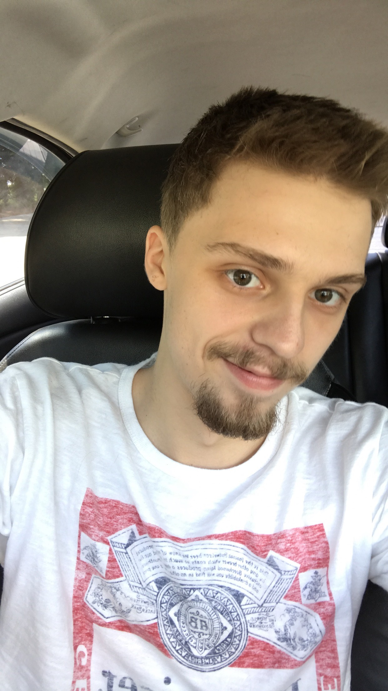

About Me
I am a 20 year old from Andover, Minnesota. I moved to Concord in October of 2017, and I am enjoying it so far. I played baseball with my dad as my coach from as early as I can remember, until I started to get bored with it in about 8th grade. After baseball, I decided to try out gymnastics. I picked up on it very quickly, keeping up with people that had been doing it since they were little kids. I enjoyed going to practice and learning new things, then showing them off to my friends and at competitions (which I usually did fairly well at). I quit gymnastics before my junior year of High School because it got to the point where almost all of my joints were in pain after every practice. After I quit that, my parents pushed me to get a job.
I've worked at Ace Hardware, Bills Superette, a Potato Farm, some free lance carpentry work, and now I currently work as a cook at Buffalo Wild Wings! I enjoy longboarding/ skateboarding, hiking through the woods/ mountains, partying with my friends in Minnesota when I see them (which isn't very often), occasionally gaming on Xbox or PC, and I love spending hours in my room coding! :)
Connect with Me